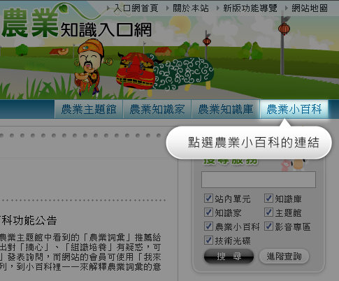

推薦詞彙範例
小百科推薦詞彙限定『農業知識』類別，如：栽培技術、防治方法、病蟲害防制技術...等。請勿推薦非農業知識類詞彙。 另生物或設備等名詞詞彙亦不符合本單元範圍，如蝴蝶蘭、荷蘭牛...等。
合格詞彙範例：隧道式栽培、設施栽培、扦插法、摘心、高效輪作制 不符合詞彙範例：金棗、藥用植物、網室、有機蔬果、雄蕊
由主題館/知識庫文章中推薦農業詞彙
在農業主題館和農業知識庫瀏覽文章時，如果有建議增加的詞彙，可使用「推薦詞彙」發表詢問

進入小百科頁面
網站的會員可使用「我來補充」的編輯行列，到小百科裡一一來解釋農業詞彙的意義
